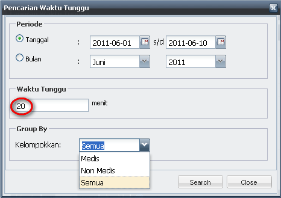
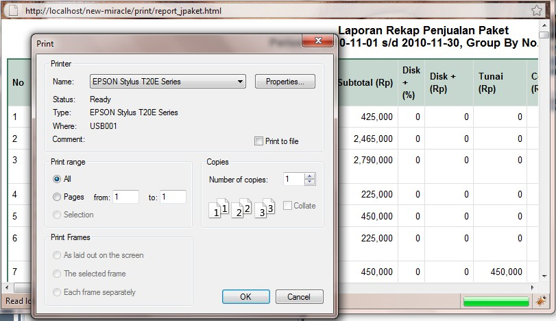
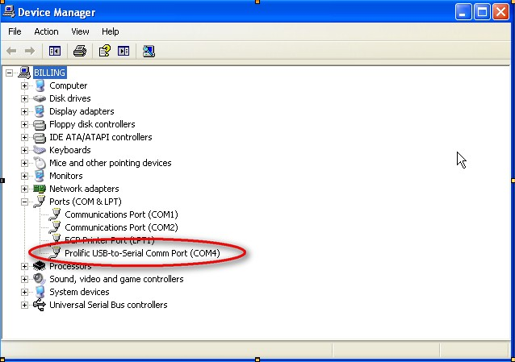

Instalasi Modem
Berikut langkah-langkah untuk melakukan instalasi driver perangkat modem:

- Ikuti petunjuk instalasi driver sampai selesai.
- Setelah proses instalasi driver modem selesai, selanjutnya kita harus melakukan pengecekan port mana yang digunakan oleh modem tersebut.
- Untuk mengetahui port mana yg digunakan modem tersebut dapat mengikuti langkah-langkah berikut:
- DI Icon My Computer klik kanan --> Properties

- Pilih Tab Hardware -- > Device Manager

- Kemudian tekan tanda "+" pada Ports (COM & LPT).
contoh pada gambar: port yg digunakan modem adalah COM4 (Prolific USB-to-Serial Comm Port (COM4)).

Copyright © 2010, IT Department of Miracle Aesthetic Clinic Group
Created with the Freeware Edition of HelpNDoc: Easily create PDF Help documents